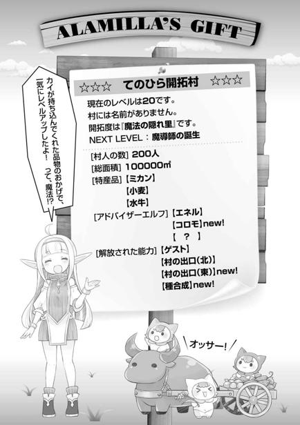

エピローグ
「ここが僕が住む島です。どうですか？ あまりになにも無くてガッカリしたでしょう」
久しぶりに帰ってきた島は未開の無人島感まる出しで、街から帰ってきたばかりだからか、余計になにもないように見えた。
時刻はすでに夕刻過ぎ。ワープの出口となる杭は巨大樹の根元に刺してあったので、月光さえも枝葉に遮られ余計に暗く、周辺の様子が薄ボンヤリとしか見えない。
「すみません、暗くてよく見えませんね。まあ、詳しいことは朝になってからで……」
「あ───！ マーイーロ───ド─────!!」
「グエッ！」
暗がりの中、なにかが叫びながら飛び出してきて、鳩尾にクリーンヒット。なにが起きたか理解するより早く、周囲に炎の球が浮かんだかと思うと、まくし立ててきた。
「や──っと帰ってきた！ 遅い！ 遅い！ 遅すぎますよ！ わたくしちゃんも、カエデももうマイロードが帰ってこないんじゃないかって、二人っきりでメソメソ泣いて過ごしてたんですよ！」
飛び出してきたのは狐娘のレンだった。どうやら小屋の中で寝ていたらしい。というか、いきなり怒られてしまった。やはりまだ子どもな二人でのお留守番は寂しかったらしい。
「ただいま、レン。寂しくさせてゴメンな。でも、元気そうでよかった。カエデは？」
「カエデも戦士君たちも元気だよ！」
レンの声で起きたのかカエデも小屋から出てきて、俺たちの姿を見て笑顔になった。
「お兄ちゃん！ アビスさんも！」
ワッと抱きついてくるカエデ。思ったよりも元気そうで良かった。
一方、サラとユーリセシルたちは、全員呆然とした様子だ。驚くのも当然だろうけど。
「カイくん、ここが君が住む島……なんだよな？ 我々はどうしたらいいだろう。その子たちに挨拶もしたいのだが」
夜に移動となってしまったのは失敗だった。事実上なにもできないに等しい。
結局、その日はみんなで簡単に挨拶だけして休むことにした。寝る場所の用意などないから全員野宿だ。我ながら情けなくて涙が出てくるが、こればっかりは仕方が無い。
次の日、日の出と共にほとんど全員が目を覚ました。
抜けるような晴天で、小高い丘の上であるこの場所からは、水平線の彼方まで見渡すことができる。見える範囲にはほとんど人工物はなく、俺の家である小屋とささやかな畑と果樹園のみである。それぞれに起き出して、口を開かず朝日を浴びている彼らの胸に何が去来するのか、俺には計り知ることはできない。
「見ての通り、なにもない島です。僕たちはここを開拓して国を作ります」
サラとユーリセシル、そして近衛兵さんたちに向け、俺はそう宣言した。
俺も彼らも、どこにも帰るところはない。すでに運命共同体だ。
「新天地というやつだな。胸が躍るよ」
「ええ、国もなにもかも失った私たちが、また一から始めることができる。なんて素敵なことでしょう」
サラとユーリセシルの表情は晴れやかだ。この状況で、さすがに振っ切れたのだろう。みんなで、ここから人生をまた始めるのだ。俺もそうだし、彼らもまたそうだ。
「でも、さしあたりはまず家を作るところからですね。戦士君たちと協力して、まずは寝る場所から作っていきましょう。もちろん僕も手伝いますよ」
国なんて言ってみても、現状はまず生きる環境を整えることからだ。
「必要なものがあったら、なんでも言って下さい。家が出来たらそれぞれに向いた仕事をしてもらいたいです。なにか技能を持っている人は言って下さい。そちらに優先してまわします。まずここに村を作りましょう」
村と簡単に言っても必要なものは多い。彼らがどんな技能や知識を持っているかはこれからだが、きっと新しい文化が島に持ち込まれることだろう。
ユーリセシルたちの奴隷の脚輪は、カエデに頼み祝福の能力で命を与えた上で命令してもらい全て外した。サラの首輪だけは外すことができなかったが、特別製だからだろう。
身軽になった近衛さんたちが思い思いに家を建てる場所を決めて、作業を始める。
戦士君たちが「オサ！」「オサ！」とちょこちょこ歩き回って家づくりを手伝っている。俺は彼らの要望に応えて、石や木材を開拓村から取り出してアシストしていった。
「カイさん、少しよろしいですか？」
「ああ、ユーリセシルさん。どうしました？」
作業を遠目に見ていたユーリセシルが、モジモジ顔のサラを連れてやってきた。
「今、総出で住居を建築しておりますが……私とサラの二名はカイさん、あなたと一緒に住まわせていただきます」
突然の同居宣言。住むところは近衛兵さんたちが作っているのかと思っていたら……。
「えっと、さすがにそれはどうかと」
お姫様であるユーリセシルがそれはマズいだろう。近衛さんたちが黙ってないぜ。
「いえ、ここに国を作るというのであれば、あなたは王。私はモンディアル公の血筋ですし、サラは魔法使い。それに、サラとはすでに同衾したとか……」
どういうこと……？ というか、サラとの同衾はほんとに一緒に寝ただけだけど。
「うちにはすでにアビスもレンも、カエデだっていますけど……」
「ですから、王の住まいは大きいものを作らなければなりませんね。これから、人もまた増えるのでしょうから」
昨日の夜のうちに、ある程度の説明はしてある。これからまだカエデのような子どもが送られてくることも、島を出て外から物資を手に入れなければならないことも。
「国を……作りましょうね、カイさん。誰も不幸にならない国を。私、微力ながら力を尽くさせていただくつもりですわ」
「私も頑張るよ！ 嫁として！ この首輪が取れないと、なんにもできないのだけれど」
「嫁!?」
サラさん突然何言い出したの!?
「な、なにをそんなにおどろいているんだ？ ユーリがそう言っているじゃないか？」
「そうなの？ 話、急すぎない!?」
「ふふ……私のことはユーちゃんって呼んでくださいね？ カ・イ・さ・ま♡」
そんな事を言いながら小指を絡めてくるユーリセシル。俺にはその華奢な指先を振り払うことはできず、結局いっしょに暮らすことになってしまった。
とにかくこれが、俺の国作りの最初の一歩目となった。
ここからさらに国民も嫁も増えていくことになるとは、この時の俺には知るよしもない。
